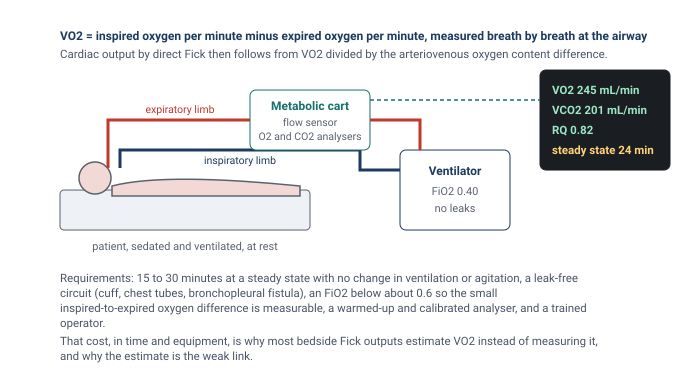

Module N7 · Topic 4 of 4
Cardiac output measurement
Pressures tell you how full the chambers are and how hard the ventricles are working against their loads. They do not tell you how much blood is moving. Flow is the quantity that oxygen delivery is built on, it is the Flow limb of the Tone, Filling, Flow triad in the Test step of the ACT method, and it is the denominator of every resistance the catheter reports. A pulmonary artery catheter is the one bedside instrument that can measure it directly, and it does so in two quite different ways. Thermodilution follows a bolus of cold through the right heart and infers flow from how quickly the cold is carried away. The Fick principle treats the lungs as the place where oxygen is loaded onto blood and infers flow from how much oxygen the body takes up and how much each litre of blood carries. Each method rests on assumptions, each has conditions that break it, and neither is the truth against which the other is judged. Knowing which to trust, and when, is the last piece of using the catheter well.
Thermodilution: the principle
Thermodilution belongs to a family of indicator dilution methods that goes back to Stewart's experiments in the 1890s, in which a known amount of a marker substance was injected upstream and its concentration followed downstream. The equation that carries his name and Hamilton's is the mathematical form of that experiment. Fegler showed in 1954 that heat could serve as the indicator in animals, and Ganz and Swan brought the method to the bedside in 1971 with a thermistor mounted on the flow-directed catheter they had introduced the year before. The idea is a conservation argument. Inject a known quantity of cold into flowing blood and measure the temperature of the blood downstream as the cold passes. If the flow is fast the cold is swept past the thermistor quickly and the temperature dips briefly. If the flow is slow the same cold takes longer to pass and the temperature stays depressed for longer. The total amount of cold detected, which is the area under the temperature curve, is the same in both cases, because all of it eventually goes by. What differs is how it is spread out in time, and that spread is set by the flow.
Read the equation as a sentence. The numerator is the cold delivered: a volume, times how much colder than blood it was, times a constant that converts that into heat units. The denominator is the cold detected, the area under the curve of temperature change against time at the thermistor. Cardiac output is delivered cold divided by detected cold per unit time, which is why output is inversely proportional to the area under the curve. A high output sweeps the bolus past quickly and gives an early, sharp, small curve. A low output gives a broad, lazy curve with a much larger area. Every source of error in the method can be traced to one of the two terms: either the monitor has been told the wrong amount of cold was delivered, or the curve it integrates does not contain all the cold that was.
![Two panels plotting the fall in pulmonary artery blood temperature against time after a cold injection. In the upper panel three curves for three cardiac outputs: a high output gives an early, sharp, small curve, a normal output a medium curve, and a low output a late, broad, tall curve with a much larger area. In the lower panel a normal curve is compared with the smaller curve produced when only 7 mL is injected although the monitor is set for 10 mL, and with the low, prolonged curve of severe tricuspid regurgitation.](img/n7-t4-thermodilution-curves.svg)
Thermodilution: doing it at the bedside
The mechanics follow from the principle. A bolus of cold fluid, conventionally 10 mL of dextrose 5 percent or saline, goes into the proximal (blue) port of the catheter, which opens into the right atrium about 30 cm from the tip. It mixes with the venous return in the atrium and ventricle and is carried into the pulmonary artery, where the thermistor 4 cm from the tip records the temperature of the passing blood. An in-line probe records the temperature of the injectate as it leaves the syringe, so the monitor knows Ti, and the thermistor records Tb before the injection. The computation constant K is specific to the catheter model and the injectate volume and temperature, and it is entered on the monitor's procedure screen before the first injection. The monitor then prompts when it is ready. Inject the full 10 mL briskly and smoothly, in a few seconds, so that the bolus enters the circulation as a single slug of cold rather than a trickle that the thermistor may not distinguish from baseline drift. Repeat at least three times, at the same point in the respiratory cycle, discard any value that differs from the others by more than about 10 to 15 percent, and average the rest. Keep the balloon deflated throughout, because a wedged tip is no longer sampling the whole pulmonary artery flow.
Stetz and colleagues, pooling fourteen published comparisons, put the reproducibility of commercial thermodilution in numbers that are still the working rule. With three injections averaged per determination, two determinations have to differ by 12 to 15 percent before the difference can be called clinically significant. With a single injection the threshold rises to 20 to 26 percent. Two implications follow. A change of 10 percent between two triplicate determinations is inside the noise of the method and should not be treated as a response to anything. And a single injection is never a measurement. Continuous cardiac output catheters replace the syringe with a thermal filament in the right ventricle that warms the blood in a pseudo-random pattern, and the thermistor reconstructs the washout from the pattern. They remove the operator from the equation and average over several minutes, which smooths the number and also delays it. They do not remove any of the physiological sources of error below.
How accurate is it?
Accuracy is a comparison against a reference, and for cardiac output the reference is direct Fick with measured oxygen consumption. Hoeper and colleagues made 105 simultaneous measurements in 35 patients with pulmonary hypertension and found a mean difference between thermodilution and direct Fick of 0.01 L/min, with 95 percent limits of agreement of plus or minus 1.1 L/min, and neither the bias nor the limits were affected by low output or by severe tricuspid regurgitation. Khirfan, Tonelli and colleagues repeated the comparison in 75 patients with pulmonary arterial hypertension, measuring oxygen consumption breath by breath at the time of catheterisation: direct Fick and thermodilution cardiac indices were 2.59 and 2.57 L/min/m2, the intraclass correlation was 0.88, and the difference was not explained by the severity of tricuspid regurgitation, which was at least moderate in two thirds of the cohort. Yet 29 percent of individual thermodilution values differed from direct Fick by 20 percent or more. That is the shape of the answer in every comparison: unbiased on average, with limits of agreement wide enough that any single number can be substantially wrong. Critchley and Critchley's analysis of the comparison literature concluded that, on the assumption that the reference methods themselves carry an error near 20 percent, a new technique agreeing within plus or minus 30 percent is doing as well as can be shown. Thermodilution is a good measurement of a trend built from repeated, standardised determinations. It is a poor measurement of a single moment.
Sources of error in thermodilution
Each error below belongs to one of the two terms in the equation. Either the cold delivered was not what the monitor assumed, or the curve the monitor integrated did not contain the cold that was delivered. Keeping that split in mind makes the direction of each error predictable rather than memorised.
Injectate volume and temperature
The monitor is told the volume and it measures the temperature, so an error here is an error in the numerator. A smaller volume than the monitor was set for delivers less cold than assumed, the curve is smaller, and the output is reported falsely high. A larger volume reads falsely low. Injectate that has warmed in the syringe while the operator waited delivers less cold than its measured starting temperature implied, which also reads high if the in-line probe is not at the point of injection. Elkayam and colleagues showed in 33 critically ill patients that 10 mL at room temperature was as reproducible as 10 mL iced and carried no systematic error against it, that 5 mL at room temperature nearly doubled the scatter, and that 3 mL iced produced a coefficient of variation of 32 percent against 10 percent for the standard. Pearl and colleagues reached the same conclusion from six combinations of volume and temperature: the averages agreed, but only the two 10 mL combinations were acceptably reproducible. Nishikawa and Dohi's review recommends 10 mL at room temperature for adults. Iced injectate gives a larger signal and helps when the output is low or the patient is hypothermic, at the cost of more handling. The rule is consistency: the same volume, the same temperature, and the same computation constant for every injection in a series.
Injection speed
The speed of injection is often listed as a source of inaccuracy, and the reason deserves precision. The Stewart-Hamilton equation does not contain an injection time, and a bolus that goes in over four seconds delivers exactly the same cold as one that goes in over two. What speed affects is the shape of the curve and whether the thermistor recognises it. A slow injection spreads the cold over a longer period, lowers the peak, and produces a curve that begins to merge with the ordinary drift in pulmonary artery temperature, which itself swings with the respiratory cycle. The monitor's algorithm has to decide where the curve begins and ends and extrapolate a tail, and a low, drawn-out curve makes both decisions unreliable. So a slow injection does not bias the output in a fixed direction. It degrades the curve, and the error it produces is scatter rather than bias. Inject briskly and completely, and look at the curve the monitor displays before accepting the number.
The respiratory cycle
Right ventricular output is not constant across a breath. Venous return and right ventricular loading swing with pleural pressure, so the flow the bolus meets depends on when in the cycle it was injected. Jansen and colleagues, injecting at 50 evenly spaced points across the ventilatory cycle in ventilated animals, found that individual right-sided measurements ranged over 70 percent while their average matched direct Fick, and that the variation was systematic with the phase of the breath rather than random. Stevens and colleagues then showed in 32 patients that injections timed to end-exhalation or to peak inspiration gave much smaller standard deviations than injections made at random, and recommended end-exhalation. Two defensible practices follow. Inject at the same phase every time, usually end-expiration, which gives a reproducible number that represents that phase. Or space the injections evenly across the cycle and average, which gives a number closer to the mean flow. Either is acceptable and the two should not be mixed within a series. Rapid volume infusion through another line during the measurement changes the baseline blood temperature and can produce major errors, as Wetzel and Latson described, so pause infusions for the duration of the injections.
Shunts and rhythm
An intracardiac shunt breaks the conservation argument. With a right-to-left shunt part of the injectate leaves the right heart before it reaches the thermistor, so the curve contains less cold than was delivered and the output is reported falsely high. With a left-to-right shunt the thermistor sees all the cold, but the flow it measures is pulmonary blood flow, which now exceeds systemic flow by the shunt volume, so the number is correct for the lungs and an overestimate for the body. In either case the Fick method, with saturations sampled at each level of the right heart to find the step-up, is the way to separate pulmonary from systemic flow. Atrial fibrillation with a variable rate makes stroke volume vary beat to beat, which adds scatter to the curve and can push the result in either direction. The remedy is more injections and a wider margin before calling a change real. A wedged or partly wedged tip, a thermistor lying against the vessel wall, and the wrong computation constant all corrupt the curve in ways that a glance at the displayed trace usually reveals.
Tricuspid regurgitation
The belief that tricuspid regurgitation invalidates thermodilution is widely held, and the literature behind it is more interesting than the belief. Predict first what the leak should do. Part of the cold bolus is pumped forward into the pulmonary artery, part is thrown back into the atrium and comes forward on the next beat, and part of that is thrown back again. None of the cold is lost. It all reaches the thermistor eventually, but spread over more beats, so the curve is lower and longer with a prolonged tail. If the monitor integrated the whole curve the area would be unchanged and so would the output. The error arises because the monitor does not wait. It fits the descending limb and extrapolates the tail to exclude recirculation, and a tail that is genuinely prolonged is partly cut off. Truncating the area makes the output read high, while a curve so low and flat that its peak is under-recognised makes it read low, and which effect wins depends on the algorithm, the severity of the leak and the flow.
The studies say exactly that. Cigarroa and colleagues found in 1989 that thermodilution read consistently lower than Fick or dye dilution in 17 patients with tricuspid regurgitation, 4.22 against 4.99 L/min, and agreed closely in 13 without it. Heerdt and colleagues reported the opposite in 1992, a near doubling of the thermodilution output after the acute intraoperative onset of regurgitation that neither a Doppler catheter nor direct aortic flow measurement confirmed, and then showed in an animal model that the direction of the error depended on flow: underestimation at higher outputs, overestimation at very low ones, and little effect in between. Balik and colleagues, comparing thermodilution with transoesophageal Doppler in 27 ventilated patients, found the disagreement grew with the grade of regurgitation, from 0.5 L/min with none or mild to 1.9 L/min with severe, in the direction of underestimation. Against these stand the pulmonary hypertension cohorts, in which tricuspid regurgitation is nearly universal. Hoeper found no effect of severe regurgitation on the agreement with direct Fick. Fares and colleagues found no difference in bias between patients with a regurgitant jet velocity above and below 3 m/s. Khirfan and Tonelli found the difference between thermodilution and direct Fick unrelated to regurgitation severity. The fair summary is that in mild and moderate regurgitation the effect is small, that in severe regurgitation the method becomes noisier and may be biased in either direction depending on flow and on the monitor's algorithm, and that modern algorithms in patients with chronic regurgitation and adapted right hearts perform better than the older reports predicted. The bedside response is not to abandon the method but to look at the curve, use more injections, and cross-check with a Fick calculation from the mixed venous saturation. When the two disagree in a patient with severe regurgitation, direct Fick with measured oxygen consumption is the arbiter.
The Fick principle
The Fick method is the reference standard for cardiac output, and it is worth seeing why before seeing how it is used. Adolf Fick's insight was a mass balance. If a substance is taken up by the body at a known rate, and the concentration of that substance is known in the blood entering the tissues and in the blood leaving them, then the flow of blood must be the uptake divided by the difference in concentration. For oxygen the accounting is done at the lungs, which is where oxygen enters the blood. The blood arriving at the lungs is mixed venous blood, sampled from the pulmonary artery, where the venous return from every organ has been blended. The blood leaving is arterial. The oxygen added to each litre of blood on its way through the lungs is the arteriovenous content difference, and the oxygen added to all the blood per minute is the oxygen consumption of the body, VO2, because at steady state what the lungs load is what the tissues use. Flow is therefore consumption divided by the content difference. If you know the oxygen used, and the oxygen in and out, you know the flow.
CaO2 = 1.34 × Hb × SaO2 + 0.003 × PaO2
CvO2 = 1.34 × Hb × SvO2 + 0.003 × PvO2VO2, oxygen consumption (mL/min); CaO2 and CvO2, arterial and mixed venous oxygen content (mL/dL, multiply by 10 for mL/L); Hb, hemoglobin (g/dL); SaO2 and SvO2, arterial and mixed venous saturation as fractions. With Hb 12, SaO2 0.98 and SvO2 0.68, the content difference is 1.34 × 12 × 0.30, which is 4.8 mL/dL or 48 mL/L, and a VO2 of 250 mL/min gives a cardiac output of 5.2 L/min.
Three measurements go into the calculation. Two of them, the arterial and mixed venous saturations and the hemoglobin, are routine: an arterial blood gas and a sample drawn slowly from the distal port of the catheter, with the balloon down, so that the blood is genuinely mixed. Pulse oximetry is not an acceptable substitute for the arterial value. The third, oxygen consumption, is the one that decides whether the result is a measurement or an estimate, and it divides the method into two. Direct Fick measures VO2. Indirect Fick assumes it.
Measuring oxygen consumption
Oxygen consumption is measured at the airway by indirect calorimetry. A metabolic cart placed in the breathing circuit measures the volume of gas moving in and out and the oxygen and carbon dioxide concentrations of inspired and expired gas, breath by breath, and reports the difference between oxygen inhaled and oxygen exhaled per minute. That difference is VO2. Douglas bags, in which expired gas is collected over a timed interval and analysed, are the older version of the same measurement and were the reference in the cardiac catheterisation laboratory for decades. In a ventilated patient the cart connects to the expiratory limb of the circuit. In a spontaneously breathing patient a canopy or a mouthpiece serves the same purpose.

The measurement is exacting, which is the reason it is rarely made. The difference between inspired and expired oxygen concentration is small, a few percent of a large number, and the instrument has to resolve it accurately, which requires a warmed-up and calibrated analyser and a circuit with no leaks around the cuff, through a chest drain, or across a bronchopleural fistula. As the inspired oxygen fraction rises the difference becomes a smaller fraction of a larger number and the error grows, so measurements are unreliable above an FiO2 of about 0.6, which excludes many of the patients in whom the output matters most. The patient must be at a steady state, without changes in ventilation, sedation, temperature or agitation, for long enough that the average is stable, which in Khirfan and Tonelli's protocol meant averaging breath-by-breath values over 12 to 15 minutes, and which nutritional practice extends further. Haugen and colleagues, and the position paper of the ICALIC group, set out these requirements in detail. All of it takes a trained operator and a device that most intensive care units own for nutritional assessment rather than hemodynamics, and the whole procedure has to be repeated for every measurement. Set against a thermodilution triplicate that takes two minutes, the cost is why most bedside Fick outputs are indirect, with VO2 estimated rather than measured. That choice is where the method loses its standing as a reference.
Estimating oxygen consumption, and how well it works
Several conventions exist for the assumed value, and they are worth laying side by side because the choice among them changes the output by as much as the choice of method does.
| Approach | What it assumes | Origin |
|---|---|---|
| Fixed index | 125 mL/min per m2 of body surface area, about 250 mL/min for an average adult, or 3.5 mL/kg/min | Dehmer and colleagues measured a mean of 126 mL/min/m2 in 108 adults at catheterisation, with a range of 65 to 250 and lower values in sedated patients |
| LaFarge and Miettinen | Regression equations from measured VO2 in patients at catheterisation | Cardiovascular Research, 1970. Kendrick and colleagues found these the closest of the available formulae to measured values |
| Bergstra and colleagues | A regression derived from dye dilution outputs in 250 patients, after finding that LaFarge underestimated VO2 by 22 mL/min on average in their cohort | European Heart Journal, 1995 |
| Tonelli and colleagues | A model adding heart rate, inspired oxygen and sex to body surface area, derived from breath-by-breath measurements in 336 patients and validated in 114 | Respiratory Care, 2015, an example of the continuing effort to improve the estimate |
Each of these has been tested against measured VO2, and the results are consistent. Kendrick and colleagues compared assumed and measured values in 80 adults with cardiac disease and found that more than half differed by more than 10 percent and many by more than 25 percent. Fakler and colleagues found the same in 143 children with congenital heart disease, with one common formula overestimating measured VO2 by 53 mL/min/m2 on average. Narang and colleagues measured resting VO2 by Douglas bag in 535 adults at right heart catheterisation and compared it with the Dehmer, LaFarge and Bergstra estimates. Measured VO2 averaged 241 mL/min with a standard deviation of 57. The median absolute error of the estimates ran from 28 to 38 mL/min, between 17 and 25 percent of patients were misestimated by more than 25 percent, and the errors were largest in severe obesity. In Khirfan and Tonelli's pulmonary hypertension cohort the Dehmer estimate was unbiased on average but 20 percent of individual values were off by 20 percent or more, the Bergstra estimate ran high and the LaFarge estimate ran low, and each formula placed a third or more of patients in a different risk category from the one direct Fick assigned.
The largest comparison is Opotowsky and colleagues' analysis of 12,232 veterans and 3,391 patients at Vanderbilt who had both thermodilution and estimated Fick outputs at the same catheterisation. The two correlated only modestly, with r of 0.65. The mean difference was negligible, but the 95 percent limits of agreement ran from 50 percent below to 49 percent above, and the two methods differed by more than 20 percent in 38 percent of patients. Fares and colleagues found a difference above 20 percent in 43 percent of their pulmonary hypertension referrals and in 37 percent of 1,315 procedures overall. And when Opotowsky's group asked which number better predicted death, a low thermodilution index was the stronger predictor of 90-day mortality. The direction of the indirect Fick error follows from the equation. VO2 is the numerator, so an assumed value that is too high overestimates the output, which is the usual situation in a sedated, paralysed, cooled or ventilated patient whose true consumption is below any population formula, and an assumed value that is too low underestimates it, which is the situation in fever, sepsis, shivering, agitation and work of breathing. Pulmonary oxygen consumption in severe pneumonia adds oxygen uptake that never reaches the systemic circulation. And a narrow arteriovenous difference in a high output state amplifies any error in the saturations, because a small denominator makes the quotient sensitive to it. In the intensive care unit, where VO2 changes from hour to hour, an estimated VO2 is the single largest source of error in the method, and an indirect Fick output should be regarded as an estimate with an uncertainty of a third or more in either direction.
Mixed venous oxygen saturation
The distal port also lets you draw a mixed venous oxygen saturation, the blended saturation of all venous return and one of the best single markers of whether delivery is meeting demand. Rearranging the Fick equation shows what the number contains.
Four variables set it: arterial saturation, hemoglobin, cardiac output and oxygen consumption. A low SvO2 means that the tissues are extracting a larger fraction of what is delivered, which points to inadequate delivery (low output, anemia, hypoxemia) or to raised demand (fever, shivering, agitation, work of breathing). A high SvO2 can mean generous delivery or low demand, as in deep sedation, paralysis or hypothermia, but it can also mean that delivered oxygen is not being taken up. In sepsis microvascular shunting and mitochondrial dysfunction let oxygenated blood return to the heart having bypassed or been refused by the cells, and in cyanide poisoning the cells cannot use it at all. In both the saturation is high and the patient is in shock. Walley's review makes the point that SvO2 is more directly related to tissue oxygenation than cardiac output is, and less prone to error, because a small error in output becomes a larger error in the judgement of adequacy. A central venous saturation from the tip of a central line near the right atrium is the usual surrogate when there is no pulmonary artery catheter. It samples the upper body only, runs a few percent above the true mixed value in shock and below it in health, and tracks the trend well enough to be used the same way.
1. Distributive shock. Thermodilution output 3.0 L/min, SvO2 82 percent, lactate 5.0 mmol/L, on norepinephrine. A low output should produce a low saturation. This one is high, so the tissues are not extracting the oxygen that reaches them, and the lactate says they are in trouble. The combination is impaired extraction, the signature of sepsis, and a high SvO2 here is not reassurance. It is the finding.
2. A number that does not fit. Thermodilution output 2.2 L/min, SvO2 68 percent, normal lactate, good urine output, warm skin. A true output of 2.2 in an adult with normal consumption should drive the saturation into the fifties and the lactate up. Everything except the thermodilution number says the flow is adequate. Before escalating to an inotrope, validate the measurement: check the volume set on the monitor against the syringe, the injectate temperature, the timing in the respiratory cycle, the rhythm and the curve. A Fick calculation from the saturation, with Hb 12 and an estimated VO2 of 250, gives about 5.2 L/min, which fits the patient.
3. Two deficits at once. Thermodilution output 3.2 L/min, SvO2 52 percent, Hb 7 g/dL, SaO2 96 percent, after a gastrointestinal bleed. Delivery is low on two counts, flow and hemoglobin, and extraction has risen to compensate. Correcting either raises the saturation. The transfusion addresses the deficit the output number cannot see.
4. An output that is too good to be true. Thermodilution output 13 L/min in a ventilated patient whose examination suggests low flow, with a known patent foramen ovale. Cold leaving the right heart across the septum shrinks the curve and inflates the number. The saturation and a direct Fick, with saturations sampled at each level to quantify the shunt, are the measurements to believe.
Choosing a number to trust
The two methods fail in different places, which is the reason to have both. Thermodilution does not need an oxygen consumption, so it is the more robust bedside method when metabolism is unstable, which in the intensive care unit is most of the time. It is corrupted by intracardiac shunts, by severe tricuspid regurgitation at the extremes of flow, by variable rhythms, and above all by technique. Indirect Fick is corrupted by its assumed VO2, which is wrong by a quarter or more in a substantial fraction of patients even at rest and by far more in the febrile, the shivering, the sedated and the paralysed. Direct Fick with measured VO2 is the reference and is the method to reach for when the two bedside methods disagree in a patient with a shunt, severe regurgitation or atrial fibrillation with a variable rate, if the equipment and the steady state can be had. Neither method gives a beat-to-beat output. Bolus thermodilution averages over the several beats the curve spans, and continuous systems over minutes.
Whichever number the catheter gives, it is a number to interpret rather than a target to chase. Confirm that the technique was valid before believing it. Set it beside the mixed venous saturation, the lactate, the urine output and the examination, and ask whether the four agree. When they do not, the measurement is the first thing to doubt, not the patient. A cardiac output that has been validated, that fits the saturation, and that has moved by more than the noise of the method is the piece of information the pulmonary artery catheter was placed to provide.
This closes the four PA catheter topics. Topic 1 established when the catheter is worth its risk and how the setup makes its numbers trustworthy, Topic 2 how to get it into place, Topic 3 how to read what each chamber writes, and this topic how to measure flow and how far to believe it. The final module puts the pieces together at the bedside.
References
- Stewart GN. Researches on the circulation time and on the influences which affect it. J Physiol. 1897;22(3):159-183. doi:10.1113/jphysiol.1897.sp000684. Free full text.
- Fegler G. Measurement of cardiac output in anaesthetized animals by a thermodilution method. Q J Exp Physiol Cogn Med Sci. 1954;39(3):153-164. doi:10.1113/expphysiol.1954.sp001067.
- Ganz W, Donoso R, Marcus HS, Forrester JS, Swan HJ. A new technique for measurement of cardiac output by thermodilution in man. Am J Cardiol. 1971;27(4):392-396. doi:10.1016/0002-9149(71)90436-x.
- Forrester JS, Ganz W, Diamond G, McHugh T, Chonette DW, Swan HJ. Thermodilution cardiac output determination with a single flow-directed catheter. Am Heart J. 1972;83(3):306-311. doi:10.1016/0002-8703(72)90429-2.
- Hoeper MM, Maier R, Tongers J, Niedermeyer J, Hohlfeld JM, Hamm M, et al. Determination of cardiac output by the Fick method, thermodilution, and acetylene rebreathing in pulmonary hypertension. Am J Respir Crit Care Med. 1999;160(2):535-541. doi:10.1164/ajrccm.160.2.9811062.
- Critchley LA, Critchley JA. A meta-analysis of studies using bias and precision statistics to compare cardiac output measurement techniques. J Clin Monit Comput. 1999;15(2):85-91. doi:10.1023/a:1009982611386.
- Stetz CW, Miller RG, Kelly GE, Raffin TA. Reliability of the thermodilution method in the determination of cardiac output in clinical practice. Am Rev Respir Dis. 1982;126(6):1001-1004. doi:10.1164/arrd.1982.126.6.1001.
- Elkayam U, Berkley R, Azen S, Weber L, Geva B, Henry WL. Cardiac output by thermodilution technique. Effect of injectate's volume and temperature on accuracy and reproducibility in the critically ill patient. Chest. 1983;84(4):418-422. doi:10.1378/chest.84.4.418.
- Pearl RG, Rosenthal MH, Nielson L, Ashton JP, Brown BW Jr. Effect of injectate volume and temperature on thermodilution cardiac output determination. Anesthesiology. 1986;64(6):798-801. doi:10.1097/00000542-198606000-00021.
- Nishikawa T, Dohi S. Errors in the measurement of cardiac output by thermodilution. Can J Anaesth. 1993;40(2):142-153. doi:10.1007/BF03011312.
- Stevens JH, Raffin TA, Mihm FG, Rosenthal MH, Stetz CW. Thermodilution cardiac output measurement. Effects of the respiratory cycle on its reproducibility. JAMA. 1985;253(15):2240-2242. doi:10.1001/jama.253.15.2240.
- Jansen JR, Schreuder JJ, Bogaard JM, van Rooyen W, Versprille A. Thermodilution technique for measurement of cardiac output during artificial ventilation. J Appl Physiol Respir Environ Exerc Physiol. 1981;51(3):584-591. doi:10.1152/jappl.1981.51.3.584.
- Wetzel RC, Latson TW. Major errors in thermodilution cardiac output measurement during rapid volume infusion. Anesthesiology. 1985;62(5):684-687. doi:10.1097/00000542-198505000-00035.
- Cigarroa RG, Lange RA, Williams RH, Bedotto JB, Hillis LD. Underestimation of cardiac output by thermodilution in patients with tricuspid regurgitation. Am J Med. 1989;86(4):417-420. doi:10.1016/0002-9343(89)90339-2.
- Heerdt PM, Pond CG, Blessios GA, Rosenbloom M. Inaccuracy of cardiac output by thermodilution during acute tricuspid regurgitation. Ann Thorac Surg. 1992;53(4):706-708. doi:10.1016/0003-4975(92)90342-2.
- Heerdt PM, Blessios GA, Beach ML, Hogue CW. Flow dependency of error in thermodilution measurement of cardiac output during acute tricuspid regurgitation. J Cardiothorac Vasc Anesth. 2001;15(2):183-187. doi:10.1053/jcan.2001.21947.
- Balik M, Pachl J, Hendl J. Effect of the degree of tricuspid regurgitation on cardiac output measurements by thermodilution. Intensive Care Med. 2002;28(8):1117-1121. doi:10.1007/s00134-002-1352-0.
- Fares WH, Blanchard SK, Stouffer GA, Chang PP, Rosamond WD, Ford HJ, et al. Thermodilution and Fick cardiac outputs differ: impact on pulmonary hypertension evaluation. Can Respir J. 2012;19(4):261-266. doi:10.1155/2012/261793. Free full text.
- Khirfan G, Ahmed MK, Almaaitah S, Almoushref A, Agmy GM, Dweik RA, et al. Comparison of different methods to estimate cardiac index in pulmonary arterial hypertension. Circulation. 2019;140(8):705-707. doi:10.1161/CIRCULATIONAHA.119.041614. Free full text.
- Opotowsky AR, Hess E, Maron BA, Brittain EL, Barón AE, Maddox TM, et al. Thermodilution vs estimated Fick cardiac output measurement in clinical practice: an analysis of mortality from the Veterans Affairs Clinical Assessment, Reporting, and Tracking (VA CART) Program and Vanderbilt University. JAMA Cardiol. 2017;2(10):1090-1099. doi:10.1001/jamacardio.2017.2945. Free full text.
- Kendrick AH, West J, Papouchado M, Rozkovec A. Direct Fick cardiac output: are assumed values of oxygen consumption acceptable? Eur Heart J. 1988;9(3):337-342. doi:10.1093/oxfordjournals.eurheartj.a062505.
- Fakler U, Pauli C, Hennig M, Sebening W, Hess J. Assumed oxygen consumption frequently results in large errors in the determination of cardiac output. J Thorac Cardiovasc Surg. 2005;130(2):272-276. doi:10.1016/j.jtcvs.2005.02.048.
- Narang N, Thibodeau JT, Levine BD, Gore MO, Ayers CR, Lange RA, et al. Inaccuracy of estimated resting oxygen uptake in the clinical setting. Circulation. 2014;129(2):203-210. doi:10.1161/CIRCULATIONAHA.113.003334.
- Dehmer GJ, Firth BG, Hillis LD. Oxygen consumption in adult patients during cardiac catheterization. Clin Cardiol. 1982;5(8):436-440. doi:10.1002/clc.4960050803.
- LaFarge CG, Miettinen OS. The estimation of oxygen consumption. Cardiovasc Res. 1970;4(1):23-30. doi:10.1093/cvr/4.1.23.
- Bergstra A, van Dijk RB, Hillege HL, Lie KI, Mook GA. Assumed oxygen consumption based on calculation from dye dilution cardiac output: an improved formula. Eur Heart J. 1995;16(5):698-703. doi:10.1093/oxfordjournals.eurheartj.a060976.
- Tonelli AR, Wang XF, Abbay A, Zhang Q, Ramos J, McCarthy K. Can we better estimate resting oxygen consumption by incorporating arterial blood gases and spirometric determinations? Respir Care. 2015;60(4):517-525. doi:10.4187/respcare.03555. Free full text.
- Oshima T, Berger MM, De Waele E, Guttormsen AB, Heidegger CP, Hiesmayr M, et al. Indirect calorimetry in nutritional therapy. A position paper by the ICALIC study group. Clin Nutr. 2017;36(3):651-662. doi:10.1016/j.clnu.2016.06.010.
- Haugen HA, Chan LN, Li F. Indirect calorimetry: a practical guide for clinicians. Nutr Clin Pract. 2007;22(4):377-388. doi:10.1177/0115426507022004377.
- Walley KR. Use of central venous oxygen saturation to guide therapy. Am J Respir Crit Care Med. 2011;184(5):514-520. doi:10.1164/rccm.201010-1584CI.
- Reinhart K, Bloos F. The value of venous oximetry. Curr Opin Crit Care. 2005;11(3):259-263. doi:10.1097/01.ccx.0000158092.64795.cf.